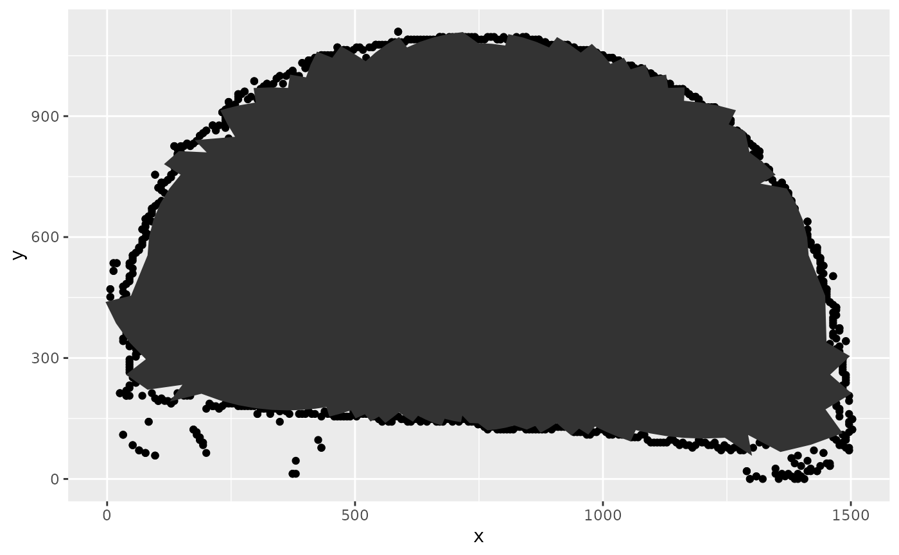

Uses concentric mirroring onto a radius around the center point, applies an alpha hull to that shape, and mirrors the result back.
inside_polygon(x, y, concavity, center = NULL)numeric vector of x positions
numeric vector of y positions
strictly positive parameter. Smaller values approach the inside of the boundary more closely. Large values concentrate on the inner center of the area
numeric vector of length 2, consisting of (x,y) coordinate for centering x and y values. If center is NULL, the half ranges of x and y are used.
dataframe of x and y positions describing the inside of the area described by the input x and y, variable id describes the order of the points
library(x3ptools)
x3p <- x3p_read(system.file(file="T1AW-LI-R4.x3p", package="wires"))
bounds <- x3p_boundary_points(x3p, 2)
polygon <- inside_polygon(bounds$x, bounds$y, 1)
library(ggplot2)
library(dplyr)
#>
#> Attaching package: ‘dplyr’
#> The following objects are masked from ‘package:stats’:
#>
#> filter, lag
#> The following objects are masked from ‘package:base’:
#>
#> intersect, setdiff, setequal, union
bounds %>%
ggplot(aes(x = x, y = y)) + geom_point() +
geom_polygon(data = polygon)
